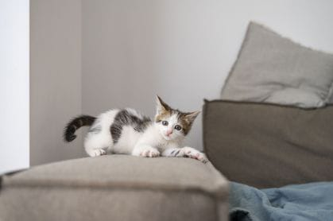
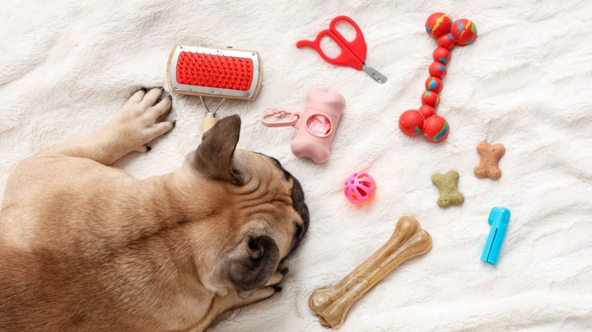

Confira dicas e artigos selecionados pela Bicharada para ajudar você a cuidar dos seus pets com mais carinho, saúde e bem-estar.
Bicharada Recomenda
Entenda como uma alimentação adequada pode influenciar a saúde, energia e qualidade de vida do seu pet.
Ler artigoBicharada Recomenda
Conheça alguns comportamentos e sintomas que podem indicar a necessidade de cuidados veterinários.
Ler artigo
Bicharada Recomenda
Descubra maneiras simples de preparar o ambiente para receber seu novo companheiro.
Ler artigo
Bicharada Recomenda
Veja opções de brincadeiras e estímulos que ajudam no desenvolvimento físico e mental dos pets.
Ler artigoBicharada Recomenda
Conheça os cuidados básicos necessários para garantir uma fase inicial saudável e segura.
Ler artigo